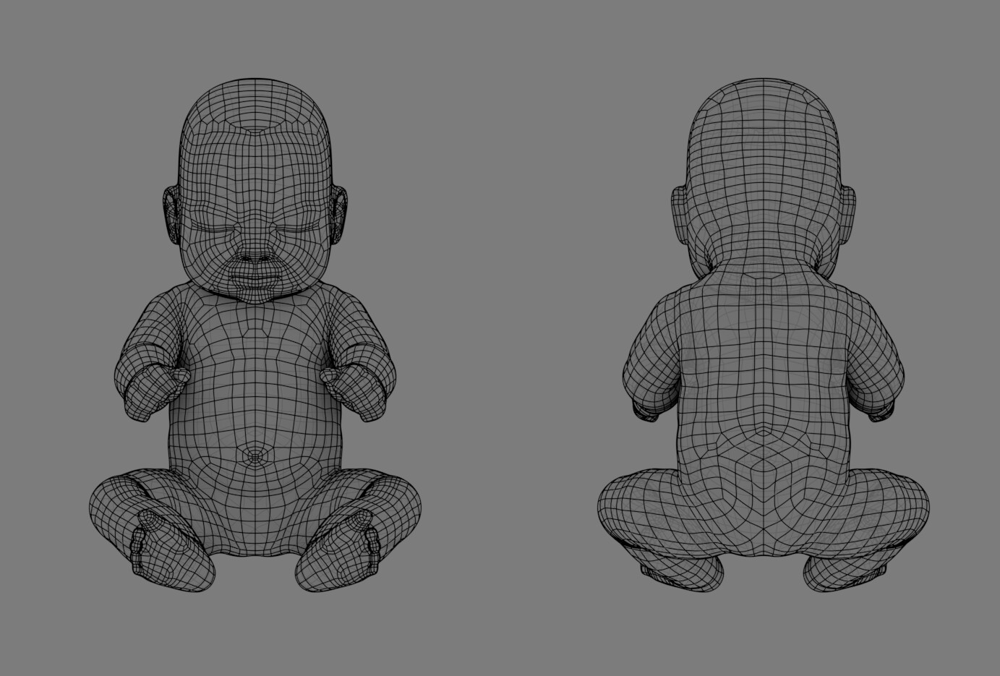

- Έτος - 2019
- Διάρκεια - 1' 20''
- Λογισμικά που χρησιμοποιήθηκαν
- Blender 3D - Μοντελοποίηση, Στήσιμο, Yλικά, Αnimation, Render (EEVEE)
- Adobe after effects - Animation, Compositing, Χρώματα
Ένα προσωπικό πρότζεκτ που αγγίζει θέματα θρησκευτικών δογμάτων, αυτονομίας και πουριτανισμού.

Το μοντέλο είναι βασισμένο σε μια 3D σάρωση του χρήστη "MandrakeImaging" στο sketchfab.